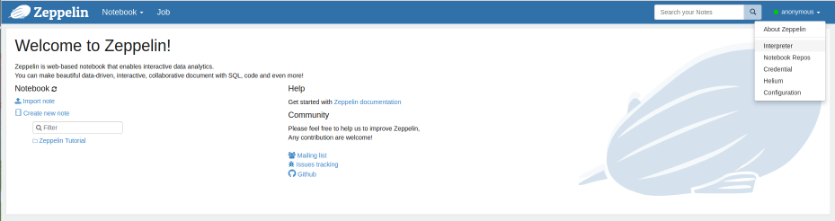
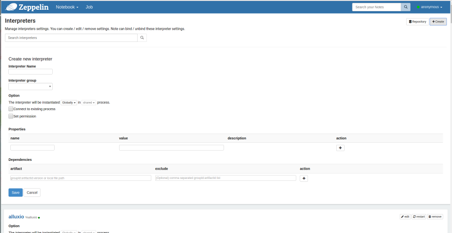
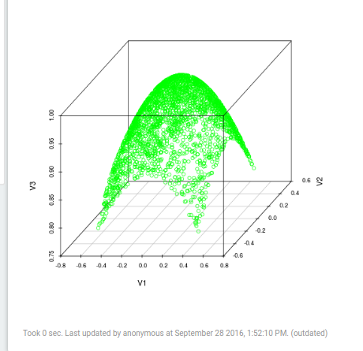

The Apache Zeppelin is an exciting notebooking tool, designed for working with Big Data applications. It comes with great integration for graphing in R and Python, supports multiple langauges in a single notebook (and facilitates sharing of variables between interpreters), and makes working with Spark and Flink in an interactive environment (either locally or in cluster mode) a breeze. Of course, it does lots of other cool things too- but those are the features we’re going to take advantage of.
Zeppelin binaries by default use Spark 2.1 / Scala 2.11, until Mahout puts out Spark 2.1/Scala 2.11 binaries you have two options.
Build Mahout
Follow the standard procedures for building Mahout, except manually set the Spark and Scala versions - the easiest way being:
git clone http://github.com/apache/mahout
cd mahout
mvn clean package -Dspark.version=2.1.0 -Dscala.version=2.11.8 -Dscala.compat.version=2.11 -DskipTests
Download Zeppelin
cd /a/good/place/to/install/
wget http://apache.mirrors.tds.net/zeppelin/zeppelin-0.7.1/zeppelin-0.7.1-bin-all.tgz
tar -xzf zeppelin-0.7.1-bin-all.tgz
cd zeppelin*
bin/zeppelin-daemon.sh start
And that’s it. Open a web browser and surf to http://localhost:8080
Proceed to Step 2.
We’ll use Mahout binaries from Maven, so all you need to do is clone, and build Zeppelin-
git clone http://github.com/apache/zeppelin
cd zeppelin
mvn clean package -Pspark1.6 -Pscala2.10 -DskipTests
After it builds successfully…
bin/zeppelin-daemon.sh start
And that’s it. Open a web browser and surf to http://localhost:8080
After opening your web browser and surfing to http://localhost:8080, click on the Anonymous
button on the top right corner, which will open a drop down. Then click Interpreter.

At the top right, just below the blue nav bar- you will see two buttons, “Repository” and “+Create”. Click on “+Create”
The following screen should appear.

In the Interpreter Name enter mahoutSpark (you can name it whatever you like, but this is what we’ll assume you’ve
named it later in the tutorial)
In the Interpreter group drop down, select spark. A bunch of other settings will now auto-populate.
Scroll to the bottom of the Properties list. In the last row, you’ll see two blank boxes.
Add the following properies by clicking the “+” button to the right.
| name | value |
|---|---|
| spark.kryo.referenceTracking | false |
| spark.kryo.registrator | org.apache.mahout.sparkbindings.io.MahoutKryoRegistrator |
| spark.kryoserializer.buffer | 32 |
| spark.kryoserializer.buffer.max | 600m |
| spark.serializer | org.apache.spark.serializer.KryoSerializer |
You’ll also need to add the following Dependencies.
Where /path/to/mahout is the path to the directory where you’ve built mahout.
| artifact | exclude |
|---|---|
| /path/to/mahout/mahout-math-0.13.0.jar | |
| /path/to/mahout/mahout-math-scala_2.11-0.13.0.jar | |
| /path/to/mahout/mahout-spark_2.11-0.13.0.jar | |
| /path/to/mahout/mahout-spark_2.11-0.13.0-dependeny-reduced.jar |
| artifact | exclude |
|---|---|
| org.apache.mahout:mahout-math:0.13.0 | |
| org.apache.mahout:mahout-math-scala_2.10:0.13.0 | |
| org.apache.mahout:mahout-spark_2.10:0.13.0 | |
| org.apache.mahout:mahout-native-viennacl-omp_2.10:0.13.0 |
OPTIONALLY You can add one of the following artifacts for CPU/GPU acceleration.
| artifact | exclude | type of native solver |
|---|---|---|
| org.apache.mahout:mahout-native-viennacl_2.10:0.13.0 | ViennaCL GPU Accelerated | |
| org.apache.mahout:mahout-native-viennacl-omp_2.10:0.13.0 | ViennaCL-OMP CPU Accelerated (use this if you don't have a good graphics card) |
Make sure to click “Save” and you’re all set.
Mahout in Zeppelin, unlike the Mahout Shell, won’t take care of importing the Mahout libraries or creating the
MahoutSparkContext, we need to do that manually. This is easy though. When ever you start Zeppelin (or restart) the
Mahout interpreter, you’ll need to run the following code first:
%sparkMahout
import org.apache.mahout.math._
import org.apache.mahout.math.scalabindings._
import org.apache.mahout.math.drm._
import org.apache.mahout.math.scalabindings.RLikeOps._
import org.apache.mahout.math.drm.RLikeDrmOps._
import org.apache.mahout.sparkbindings._
implicit val sdc: org.apache.mahout.sparkbindings.SparkDistributedContext = sc2sdc(sc)
At this point, you have a Zeppelin Interpreter which will behave like the $MAHOUT_HOME/bin/mahout spark-shell
Except, much much more.
At the begining I mentioned a few important features of Zeppelin, that we could leverage to use Zeppelin for visualizatoins.
In Mahout we can use Matrices.symmetricUniformView to create a Gaussian Matrix.
We can use .mapBlock and some clever code to create a 3D Gausian Matrix.
We can use .drmSampleToTsv to take a sample of the matrix and turn it in to a tab seperated string. We take a sample of
the matrix because, since we are dealing with “big” data, we wouldn’t want to try to collect and plot the entire matrix,
however, IF we knew we had a small matrix and we DID want to sample the entire thing, then we could sample 100.0 e.g. 100%.
Finally we use z.put(...) to put a variable into Zeppelin’s ResourcePool a block of memory shared by all interpreters.
%sparkMahout
val mxRnd3d = Matrices.symmetricUniformView(5000, 3, 1234)
val drmRand3d = drmParallelize(mxRnd3d)
val drmGauss = drmRand3d.mapBlock() {case (keys, block) =>
val blockB = block.like()
for (i <- 0 until block.nrow) {
val x: Double = block(i, 0)
val y: Double = block(i, 1)
val z: Double = block(i, 2)
blockB(i, 0) = x
blockB(i, 1) = y
blockB(i, 2) = Math.exp(-((Math.pow(x, 2)) + (Math.pow(y, 2)))/2)
}
keys -> blockB
}
resourcePool.put("gaussDrm", drm.drmSampleToTSV(drmGauss, 50.0))
Here we sample 50% of the matrix and put it in the ResourcePool under a variable named “gaussDrm”.
Now, for the exciting part. Scala doesn’t have a lot of great graphing utilities. But you know who does? R and Python. So instead of trying to akwardly visualize our data using Scala, let’s just use R and Python.
We start the Spark R interpreter (we do this because the regular R interpreter doesn’t have access to the resource pools).
We z.get the variable we just put in.
We use R’s read.table to read the string- this is very similar to how we would read a tsv file in R.
Then we plot the data using the R scatterplot3d package.
Note you may need to install scatterplot3d. In Ubuntu, do this with sudo apt-get install r-cran-scatterplot3d
%spark.r {"imageWidth": "400px"}
library(scatterplot3d)
gaussStr = z.get("gaussDrm")
data <- read.table(text= gaussStr, sep="\t", header=FALSE)
scatterplot3d(data, color="green")
